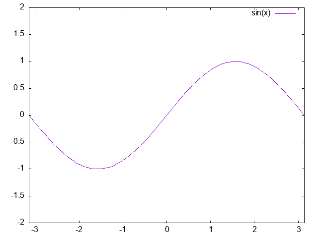
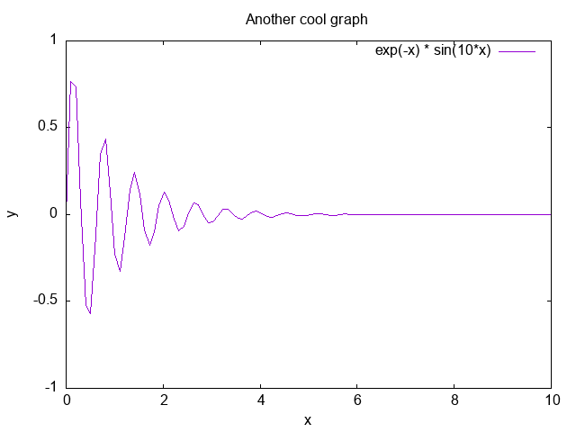

基本編
plotコマンドを用いてグラフを描けるようになりました。
しかし、まだラベルやタイトルが付いていません。
また、このままではウィンドウにグラフが表示されているだけなので、スライドや文書に貼り付けるためには保存する必要があります。
このページでは、こういった事柄について学習します。
細かい図の指定
作図範囲を指定する（set x(y)range, set autoscale）
作図範囲を指定するにはset xrange（またはyrange）コマンドを用います。
例えば、\(x\)の作図範囲を\(-\pi\)から\(\pi\)まで、\(y\)の作図範囲を\(-2\)から\(2\)までにしたい時には、
plot sin(x)などの後に
1 2 | |
setコマンドは設定を変えるだけですから、画面に表示されているグラフは変化しません。
1 | |

作図範囲の指定を取り消したい場合には
1 | |
replotと入力する必要があります。
以降このテキストではreplotの入力は省略しますが、設定を変えた（setコマンドを使った）後は必ずreplotと入力して図に反映させる必要があります。
曲線に名前を付ける（title, set key）
plotコマンドによってグラフを描くと、右上にそれがどういう曲線か表示されます（凡例）。
これを変えるにはplotコマンドの際にtitleという引数を加えます。
曲線の名前の部分を ' または '' でくくることに注意して下さい。
1 | |
曲線の名前を表示する必要がない時には
1 | |
のようにします。
凡例の表示場所を設定するにはset keyというコマンドを使います。
ここでは詳しい説明は省略しますので、オンラインマニュアルでその使い方を確かめてみて下さい。
描画スタイルを変える（set style function, with, set grid）
今まで表示したグラフは連続した曲線で描かれていました。
この表示方法を変えるコマンドとしてset style functionがあります。例えば
1 | |
段の数（一般にはgnuplotが描画のためにサンプルする点数）を変えるにはset samplesというコマンドを用います。
1 | |
グラフの表示はこの他にも、点線dotsや棒グラフboxes、パルス状のグラフimpulsesなどが使えます。
詳しくは、
1 | |
set style function linesとします．
複数のグラフをそれぞれ異なったスタイルで描きたい場合には、plotコマンドの際にwithをつけて指定します。
例えば
1 | |
set gridコマンドを使うと、\(x\) 軸、\(y\) 軸それぞれの目盛が刻まれている値の格子が入ります。
格子を消すにはunset gridとします。
軸に名前をつける（set x(y)label, title）
\(x\)軸と\(y\)軸が何を意味しているのか表示させてみましょう。
これにはset xlabel（またはylabel）を用います。
1 2 | |
set titleです。
1 | |
x軸とy軸のスケール（set size ratio）
gnuplotでは，縦横のスケールを指定することが可能です．
set size ratio rでグラフの横縦の比率が\(r\)になり，
set size ratio -rでy軸の単位長さがx軸の\(r\)倍になります．
例えば，x軸とy軸のスケールを一致させるには
1 | |
対数プロット（set logscale）
gnuplotでは対数軸の作図も可能です。例えば
1 2 | |
logscaleの後を省略した場合には全ての軸が対数軸になります。
対数プロットをやめるにはunset logscale yとします。
グラフを保存する（set terminal postscript, set output）
作ったグラフを保存してみましょう。 まず，
1 | |
qtです）．
ここにpngやjpegがあるか探しましょう．
もしあれば，png/jpegでの出力が可能です．
ない場合は，他の出力形式を検討することになります．
（個人的な意見ですが，pdf出力用のpdfcairoはオススメしません．バグることが多いからです）
以下では，pngでの出力方法を説明します．
ここまで色々なコマンドを入力していますから，まずresetでまっさらな状態にしておいてから，
plot sin(x)しましょう．
次に
1 2 | |
1 | |
output.pngにグラフが書き込まれているはずです．
最後に
1 | |
1 | |
注意1 set outputをしないで他へ出力に切り替える（set terminal qt等する）とファイルが壊れることがあります．
注意2 「set terminal png→set output 'output.png'→plot sin(x)」の順で作画したが，ファイルに書き込まれない」という事態が起こった方へ：
これも，出力先と描きたいグラフを指定しただけで，書き込むという作業は行われていないためです．
最後にset outputを行ってください．
pltファイルとload
ここまではすべて対話方式でコマンドを入力してきましたが、コマンドの数が多くなってくると面倒です． 複数のコマンドをひとつのファイルに書いておき，まとめて実行することができます。
まずファイルを作りましょう．ここではex.pltとします（一般にpltという拡張子を用いる場合が多いです）。
エディタで以下の内容を書いてみてください。
1 2 3 4 5 6 | |
これらのコマンド群を一気に実行するにはloadというコマンドを使います。
1 | |

以下は筆者の個人的な意見です．
色々なpltファイルを使っていると，お互いの設定が干渉しあって訳の分からないことになります．
例えば，ターミナルの種類をpltファイル内で変えたのを忘れてしまい，
qtターミナルだと思って作業していたらpng用ターミナルだった，などなど．
これらを防ぐために，pltファイルの先頭や末尾で設定を初期化しておくと安全です．
以下は，pngファイルを作り終わったらqtターミナルに戻る例です．
1 2 3 4 5 6 7 8 9 10 11 12 13 | |
loadとsave
先ほどloadというコマンドを学びましたが、このloadと兄弟関係にあるコマンドがsaveです。
saveコマンドを用いることで、これまでに対話形式で実行してきたコマンドを先程自分で書いたpltファイルと同様な出力として得られます。
例えば、
1 2 3 4 5 6 7 | |
1 2 3 4 5 6 7 8 9 10 11 12 13 14 15 16 17 18 19 20 21 22 23 24 25 26 27 28 29 30 | |
一瞬意味不明に見えるかも知れませんが、これは実際にgnuplot>において入力することができるコマンドを並べただけなのです。
自分で打ち込んでない部分（例えばここでは、set loadpathなど）は、gnuplotが勝手に解釈してデフォルトの環境を出力してくれます。
このファイルを良く見ると、自分で入力したset titleやset xlabelが書き出されていることが分かると思います。
p cos(x)は設定された環境が全て反映されるように最後に書かれるようになっています。
このファイルを先ほど学んだloadコマンドで読み込めば同じ状況が再現されます。
ただし、set terminal postscriptやset output 'cos.ps'のように、terminalのタイプを変更したり何かを出力したりするコマンドの部分は、saveで出力したコマンドファイルではコメントアウトされます。
皆さんのファイルでもきっとそうなっていることと思います（コマンドファイルのコメントアウトの最後の部分）。
もしloadすることでpostscriptファイルを作りたければ、この部分のコメントアウトを消したうえで、先ほど学んだ loadコマンドを用いるかあるいはktermなど普通のターミナル上で
1 | |